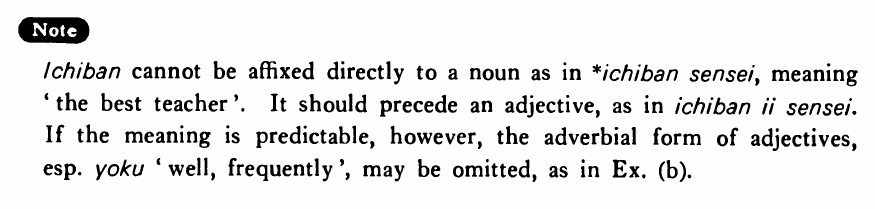

←
DoJG
→
一番・いちばん
(B. 148)
Example sentences
(ks).
クラス(の中)で大川さんが
一番
頭がいい。
Mr. Okawa is the brightest in the class.
(a).
A:この中でどの映画が
一番
面白いですか。 B:この日本の映画でしょう。
A: Among these, which movie is the most interesting? B: This Japanese movie, I guess.
(b).
A:松本さんと池田さんと清水さんの中で、誰が
一番
（よく）出来ますか。 B:池田さんです。
A: Among Mr. Matsumoto, Mr. Ikeda and Mr. Shimizu, who is the best student. B: Mr. Ikeda is.
(c).
日本で
一番
奇麗な所はどこですか。
Where is the most scenic place in Japan?
Formation
(i)
一番
Adjective い/な
一番
{高い/高かった}
Something is/was the highest
一番
{静かだ/静かだった}
Something is/was the most quiet
(ii)
一番
{Adjective い stem く/Adjective な stem に}
一番
高
く
Most highly
一番
静か
に
Most quietly
